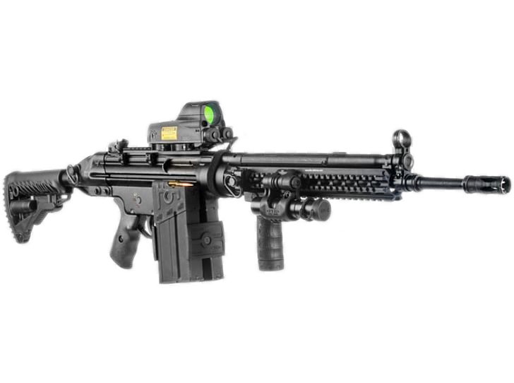
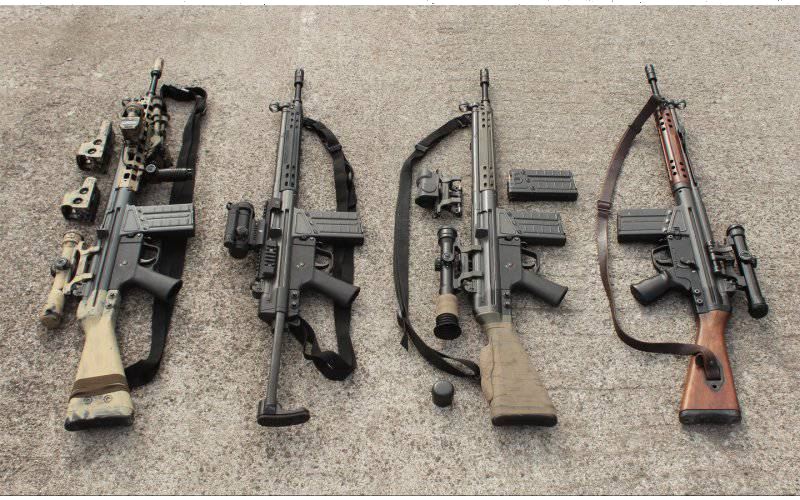
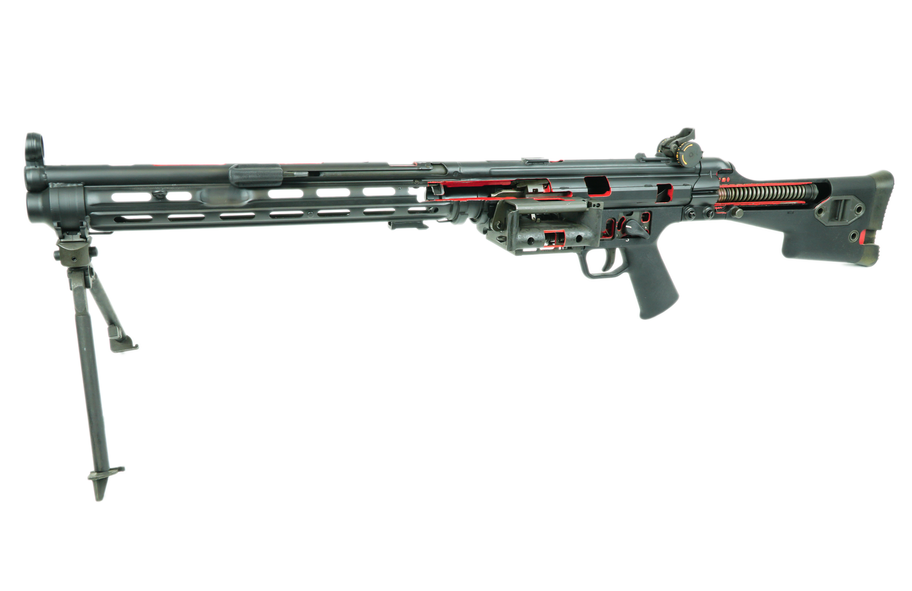

В конце Второй мировой войны фирмой Mauser был сконструирован автомат StG45(M), основанный на новом способе замедления отката затвора, однако в связи с поражением Германии работа над новым оружием полностью не была завершена. Уже после Второй мировой войны группа немецких конструкторов, работавших в компании Mauser над автоматом StG45(M), перешла в мадридскую компанию CETME, где участвовала в создании автоматической винтовки, использующей автоматику на основе полусвободного затвора (схему Людвига Форгримлера).
После принятия к середине 1950-х годов на вооружение американского патрона 7,62×51 мм в качестве стандартного боеприпаса НАТО, ФРГ, как и другие страны-члены альянса, столкнулись с проблемой перевооружения. Так как Западная Германия хотела сама производить для себя оружие, им пришлось обратиться к другим имеющимся разработкам. В частности, их заинтересовала новейшая испанская автоматическая винтовка фирмы CETME, разработанная под руководством немецкого инженера Людвига Форгримлера. В 1957 году ФРГ приобрела лицензию на винтовку СЕТМЕ и по результатам проведенного тендера права на производство нового оружия получила новая фирма Heckler & Koch.
 Различные модификации винтовки Heckler & Koch G3
Немецкий вариант винтовки получил обозначение G3 и был принят на вооружение Бундесвером в 1959 году вместе с вариантом, имеющим телескопический приклад (G3A1). В 1995 году бундесвер перешёл на новый автомат — HK G36, однако производство G3 силами самой Heckler & Koch продолжалось до 2001 года.
Принятый на вооружение автомат G36
Конструкция G3 нашла своё отражение в пистолете-пулемете HK MP5, 5,56-мм автомате HK 33, единых пулемётах HK21 и HK 23, снайперских винтовках HK PSG1 и HK MSG90.
Пистолет-пулемет MP-5 калибра 9 mm
Пулемет на базе G3, HK-21 калибра 7.62 mm
Прицельные приспособления на первых вариантах G3 и G3А1 представляли собой мушку в кольцевом намушнике и перекидной открытый целик, на более поздних модификациях (G3А2, G3А3, G3А4) целик стал диоптрическим, включавший мушку с кольцевым ограждением и установленный у заднего края ствольной коробки прицел. Последний представляет собой наклонный пустотелый поворотный барабанчик с треугольной прорезью для стрельбы на дальности до 100 м и тремя диоптрическими отверстиями на дальности 200, 300 и 400 м. Длина прицельной линии — 556 мм. Также может использоваться оптический или ночной прицел с кронштейном, который устанавливается на двух стойках на ствольной коробке. Прицел служит для стрельбы на дальности до 600 м. Приспособление для стрельбы холостыми патронами может навинчиваться на дульный срез ствола вместо пламегасителя. Оно имеет пружинный кольцевой замок для надежной установки. Приспособление состоит из открытого цилиндра с поперечным болтом, полностью закрывающим отверстие. На поверхности болта имеется вырез. Его поворотом можно регулировать количество истекающих пороховых газов для обеспечения работы автоматики. Матовое хромированное покрытие этого приспособления помогает отличить его от пламегасителя.
Афганистан провинция Гильменд британский солдат 2014 г.с винтовкой HK G3KA4
Частично информация взята с сайта википедия